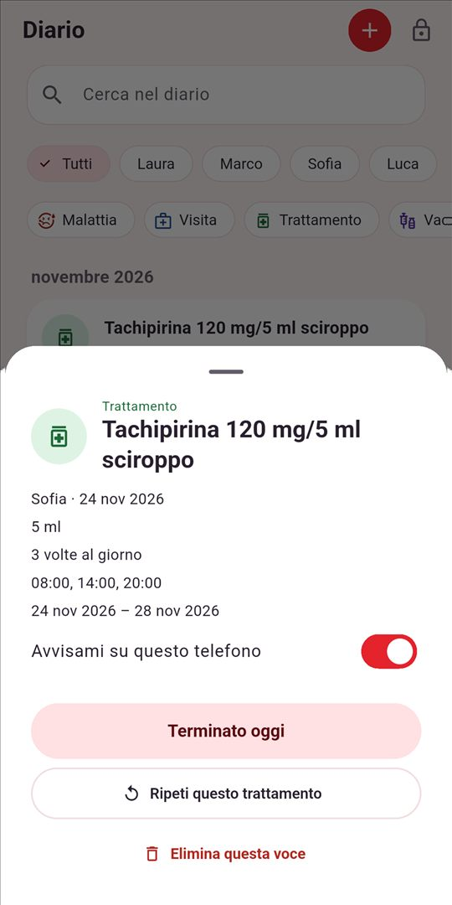
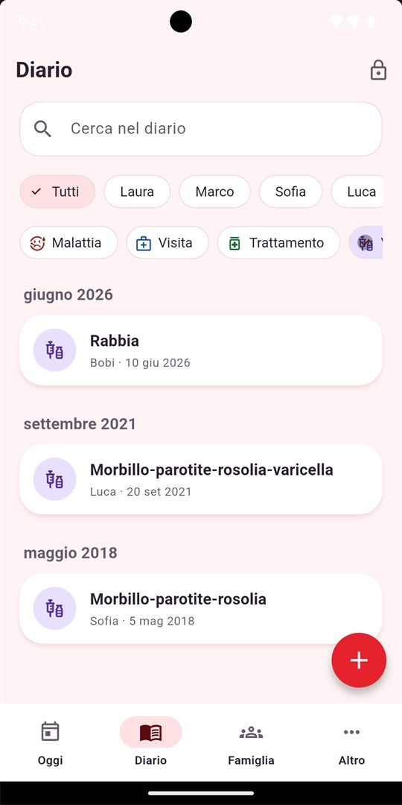

Privata, cifrata, senza internet
La salute di tutta la famiglia, solo sul tuo telefono
Medipop è un archivio privato per le malattie, le visite, i trattamenti e le vaccinazioni delle persone e degli animali di casa. Quello che scrivi resta sul telefono, cifrato.
Presto su App Store e Google Play


Cosa fa
-
Senza internet e senza account
L'app non si collega a internet e non ha né account né server. Nessuna pubblicità, nessuna analisi d'uso, nessun tracciamento.
-
Cifrato, solo sul telefono
Database cifrato con AES-256. La chiave è protetta dal telefono e da un codice di recupero che hai solo tu: nemmeno lo sviluppatore può leggere i tuoi dati.
-
Persone e animali
Un profilo per ognuno, con il ruolo in famiglia. Vaccinazioni, malattie, visite e trattamenti, con «Ripeti trattamento» per non riscrivere tutto.
-
Scambio tra genitori
Esporti un file cifrato, lo mandi con «Condividi» e l'altro genitore lo apre con «Apri con Medipop». Funziona anche tra iPhone e Android.
-
Promemoria delle medicine
Scegli tu l'ora a cui ricordare una medicina. Scegli anche per quali familiari riceverle. La notifica non mostra mai il farmaco, al massimo il nome del familiare, senza cognome, e puoi nasconderlo.
-
Cinque lingue
In italiano, inglese, francese, spagnolo e tedesco. Blocco dell'app con impronta digitale o PIN del telefono.
Uno sguardo all'app

Il diario di tutto, con la ricerca 
Un trattamento, da ripetere in un tocco 
Le vaccinazioni di ognuno 
Copia e famiglia: un file cifrato 
Cerca tra tutto quello che hai scritto
Come protegge i dati
- Nessun account, nessun server, nessuna pubblicità, nessuna analisi d'uso, nessun tracciamento.
- Nessun accesso a internet: l'app non chiede nemmeno il permesso di collegarsi.
- Database cifrato con AES-256. La chiave è protetta dal telefono e da un codice di recupero che hai solo tu: lo sviluppatore non può leggere i tuoi dati.
- Copie di sicurezza cifrate (file
.medipop) che salvi o mandi dove vuoi, per cambiare telefono o per scambiare i dati con l'altro genitore.
Se perdi il codice di recupero e il telefono, i dati sono persi per sempre. Per questo l'app ti chiede di metterlo in un posto sicuro al primo avvio.
Non è un dispositivo medico
Medipop conserva solo ciò che scrivi. Non calcola dosi, non dà consigli medici, non fa diagnosi e non è un dispositivo medico: non sostituisce il medico o il veterinario. Non si possono salvare foto o documenti.
Fonti dell'elenco dei farmaci
Per aiutarti a scrivere i nomi dei farmaci, Medipop contiene un elenco ricavato da fonti pubbliche. È un riferimento per i nomi, non informazione medica.
- Fonte: AIFA - Agenzia Italiana del Farmaco, dati aperti, licenza CC-BY 4.0. Dati rielaborati da Medipop.
- Source : Base de données publique des médicaments, medicaments.gouv.fr, Licence Ouverte. Rielaborato da Medipop.
- Source: European Medicines Agency (EMA), medicines data. Reuse authorised with acknowledgement of the source.